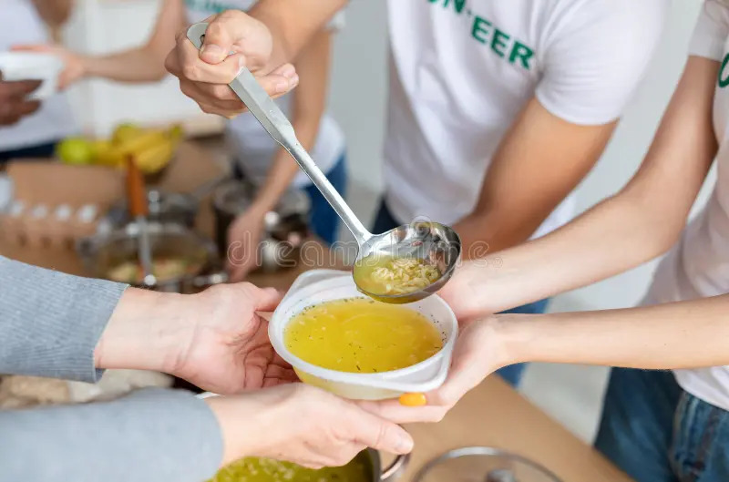

Nutrir corpos, formar cidadãos.
Desde 2018, a Cozinha Solidária 24h oferece refeições gratuitas e oficinas de culinária acessível para quem mais precisa — porque ninguém deve dormir com fome.
Conheça nosso trabalho
Quem somos
Somos uma rede de voluntários, cozinheiros e parceiros que acreditam que a comida pode mudar o mundo.
Unimos forças para combater a fome, reduzir o desperdício e espalhar solidariedade, servindo
refeições e oportunidades todos os dias — 24 horas por amor, não por obrigação.
Nosso impacto
Com o apoio de doadores, restaurantes parceiros e centenas de voluntários, a Cozinha Solidária 24h já distribuiu:
- +450.000 refeições servidas desde 2018
- 1.200 voluntários engajados em 12 cidades
- 85 toneladas de alimentos resgatados de desperdício
Depoimentos
“Aprendi a cozinhar e a ajudar os outros. Hoje ensino o que aprendi para novas pessoas.”— Marina, voluntária desde 2020
“A Cozinha Solidária me deu mais do que comida — me deu dignidade.” - João, beneficiado e agora voluntário
Junte-se a nós!
Seja como voluntário, doador ou parceiro. Sua ajuda faz toda a diferença.
Cadastre-seNossa História
Tudo começou em uma madrugada fria de 2018, quando Dona Cida, uma cozinheira de bairro em São Paulo,
percebeu que o restaurante ao lado jogava fora panelas inteiras de comida boa no fim do dia.
Naquela noite, ela pegou o que pôde, aqueceu novamente e distribuiu pratos de sopa na praça da esquina.
No dia seguinte, outras pessoas quiseram ajudar.
Em poucos meses, o gesto simples se transformou em uma corrente de solidariedade que não parou mais.
Hoje, a Cozinha Solidária 24h funciona em 12 cidades, reunindo voluntários, chefs e comunidades locais
para combater a fome e o desperdício de alimentos.
Além das refeições, oferecemos oficinas gratuitas de culinária popular, ajudando pessoas a aprender,
empreender e transformar a própria realidade.
Nosso propósito é claro:
“Ninguém deveria passar fome em um mundo onde sobra tanto.”
E enquanto houver gente com fome, nossas panelas continuarão acesas — dia e noite.